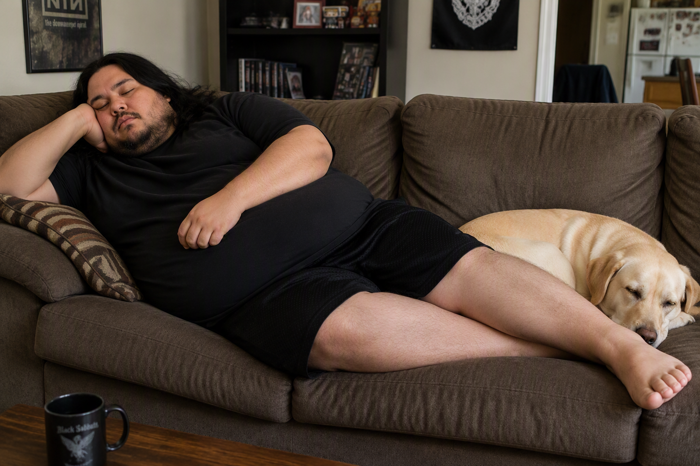

Captains Log

July 21st 2026
When You Like Your Job
I should stop and take a moment to be grateful from time to time. For the most part I really enjoy my job. I know it's not everyone who has a job where they can get sucked into a project/problem and hours fly by. That's not to say that there are things I don't get annoyed by, or aspects about it that I don't like, but by and large I do find it enjoyable.
A big part of my job is building and shipping laptops out. We use Microsofts Auto Pilot, which makes things, for the most part, easy. The problem we get with that is Microsoft optimizes its own drivers, updates, and software over what you or your organization prefers. For example we are still doing USB/Pixie building for tint machines we ship to stores because we ship them with drivers for all tinters. There are a variety of reasons for this and it can be argued that it's wasteful of time and resources to include drivers that are not strictly necessary, but again we have reasons for this. The problem is that between what Microsoft prioritizes and our file size, it takes forever for it to pull down. I mean like up to a week, which means for a week it has to be online and connected to the network just sitting, which means that we can't put another system on there to build and set up because we have to wait for that download via Intune.
I'm not tryign to complain, I'm just stating our challenges. It's stuff like that, however that people think would make the job difficult, but that I love. I love how IT is constantly growing and changing. I like the new challenges that entails, and the novel ways we have to come up with to overcome them. I have NEVER had a boring day since I started my IT career!
I count that as pretty lucky.
How bout Naps?

I remember as a kid how much I hated it when my family decided it was time for a nap. I remember sitting in bed staring up at the ceiling restlessly thinking about how much taking a nap sucked!
I have to tell you , I love taking naps now as an adult. I don't know what it is about sleepign on the couch in the middle of the day that is just:
- Just so easy to fall asleep and get comfortable
- Feel so good!
I should state, that this is not a picture of me, it is once again AI generated.
The problem I have with naps is that I feel super unprodcutive when I take them. Yesterday for instance when I got home from work I wanted to have a small snack of some pickles on the couch. Then I was going to log into Udemy and do some course work for C++. The problem is I fell asleep.
I was only out of it for about an hour, but after that getting up and making dinner and next thing you know it's 8pm. So I feel like I missed a whole afternoon because of a quick nap. I know it was only an hour, but then I struggled to get on track and find the motivation to do what else I wanted to do.
This is related to a fundamental difference that Katie and I have. If we are planning to do anything in the afternoon, go to the gym, a hike, yard work, grocery shopping, anything; I want to do it as soon as we get home. She wants to relax for a minute. I find if I sit down though, then I lose the motivation. It's also why I prefer to do chores and things in the morning versus the afternoon. I'm one of those people that if something has to be done, and it's not something I look forward to, I want to complete it ASAP.